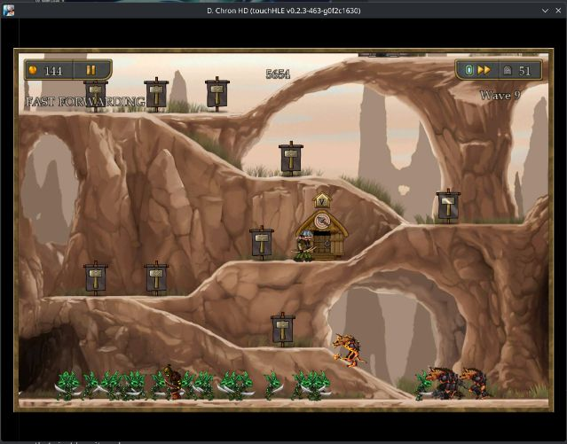
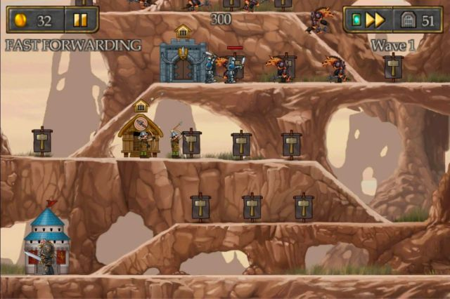
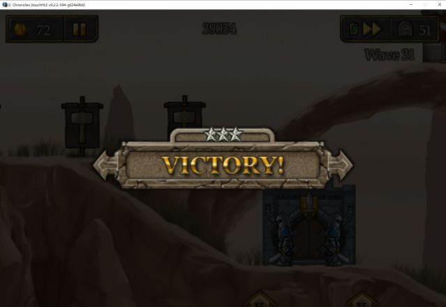
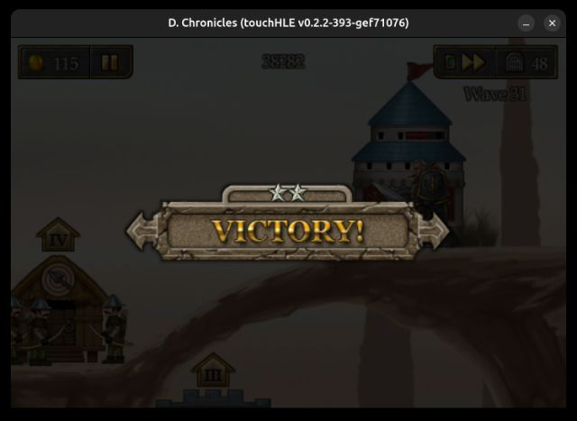
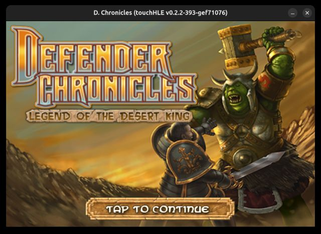
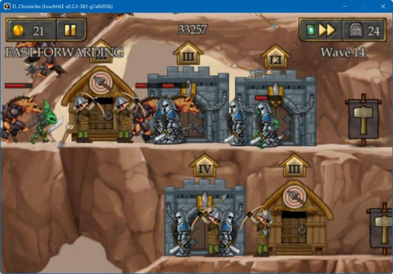
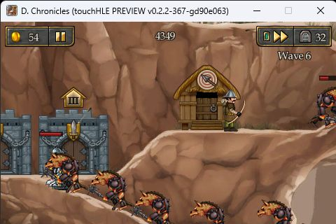
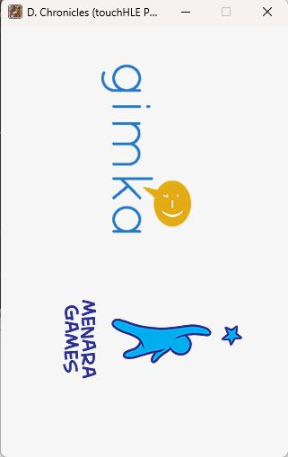

| App name | Defender Chronicles: Legend of the Desert King |
|---|---|
| Release year | 2009 |
| Developer/Publisher | Gimka Entertainment/Chillingo |
| First reported | |
| First reported by | @Bliss-1 |
| Version number | Display name | Bundle identifier | Minimum iOS version | Best rating | Last updated | First reported by | |
|---|---|---|---|---|---|---|---|
| 1.0 | D. Chronicles | com.chillingo.defenderchronicles | 2.2 | ⭐️⭐️⭐️⭐️⭐️ | @TimofeyLednev | ||
| 1.0 | D. Chronicles | com.chillingo.defenderchronicles | 2.2 | ⭐️⭐️ | @sunflowers33d | ||
| 1.2.2 | D. Chronicles | com.chillingo.defenderchronicles | 2.0 | ⭐️⭐️⭐️⭐️⭐️ | @hujerhoe | ||
| 1.4 | D. Chronicles | com.chillingo.defenderchronicles | 2.0 | ⭐️⭐️⭐️⭐️⭐️ | @Bliss-1 | ||
| 1.4.3 | D. Chronicles | com.chillingo.defenderchronicles | 3.0 | ⭐️⭐️⭐️⭐️ | @alexmaurizio | ||
| 1.5 | D. Chron HD | com.chillingo.defenderchronicleshd | 3.2 | ⭐️⭐️⭐️⭐️⭐️ | @Luminance69 |
| Version number | touchHLE version | Operating system | GPU | Scale hack supported? | Rating | Reported | Reported by | Remarks | Screenshot |
|---|---|---|---|---|---|---|---|---|---|
| 1.5 | v0.2.3-463-g0f2c1630 | Fedora KDE 44 | RX 9070 | Yes | ⭐️⭐️⭐️⭐️⭐️ | @Luminance69 | Best version of D. Chron I since you dont need to zoom out at the beginning of levels. Game does not crash on victory like in the past either. | View | |
| 1.4.3 | v0.2.3 | Android 16 | Samsung A26 (Mali-G68 MP5) | Yes | ⭐️⭐️⭐️⭐️ | @Luminance69 | Aside from crashing on victory and some buttons having bad hitboxes the game is fully playable. HD textures setting doesn't seem to work. | View | |
| 1.4.3 | v0.2.2-594-g024e9b6 | Windows 10 | RTX 3070 | Yes | ⭐️⭐️⭐️ | @Luminance69 | Game works, but the inability to zoom out significantly harms the experience, and the game crashes upon victory. | View | |
| 1.4 | v0.2.2-444-g2acfd2b | Windows 11 | RTX 3050 Ti Laptop | Didn't test | ⭐️⭐️⭐️⭐️ | @damiengenoud | Crash after level completion, but progress is saved. | ||
| 1.4 | v0.2.2-393-gef71076 | Ubuntu 24 | Intel® UHD Graphics 620 (WHL GT2) | Yes | ⭐️⭐️⭐️ | @nighto | After finishing first level (it takes 31 waves) it crashes with: thread 'main' panicked at src/dyld.rs:604:9: Call to unimplemented function _CFURLCreateStringByAddingPercentEscapes | View | |
| 1.4 | v0.2.2-393-gef71076 | Ubuntu 24 | Intel® UHD Graphics 620 (WHL GT2) | Yes | ⭐️⭐️⭐️⭐️⭐️ | @nighto | View | ||
| 1.2.2 | v0.2.2-381-g7a9205b | Windows 11 22H2 | NVidia RTX 4070 Ti Super | Partially | ⭐️⭐️⭐️⭐️⭐️ | @hujerhoe | Fully playable. Size hack is causing tiny rectangle lines in some menus. | View | |
| 1.0 | v0.2.2-367-gd90e063 | Windows 11 | AMD Radeon RX Vega 8 | Didn't test | ⭐️⭐️⭐️⭐️⭐️ | @TimofeyLednev | Works perfectly | View | |
| 1.0 | v0.2.2-331-g7bccc7c | Windows 11 22H2 | NVIDIA GeForce GTX 1050 Ti | Couldn't test | ⭐️⭐️ | @sunflowers33d | Briefly fades into intro screen before crashing on "Object 0x375fa270 (class "NSUserDefaults", 0x374f7910) does not respond to selector "dataForKey:"!" | View | |
| 1.4 | v0.2.1 | Windows 11 | RX 7800 XT | Didn't test | ⭐️ | @Bliss-1 |
| Rating | Description |
|---|---|
| ⭐️ | Completely broken: app crashes immediately without any user interaction. |
| ⭐️⭐️ | Only (part of) the main menu, intro or similar is working. |
| ⭐️⭐️⭐️ | Some of the main content of the app works, but with major issues. |
| ⭐️⭐️⭐️⭐️ | The main content of the app works (e.g. entire game is playable) with only small issues. |
| ⭐️⭐️⭐️⭐️⭐️ | Everything works. The app is fully usable. |







